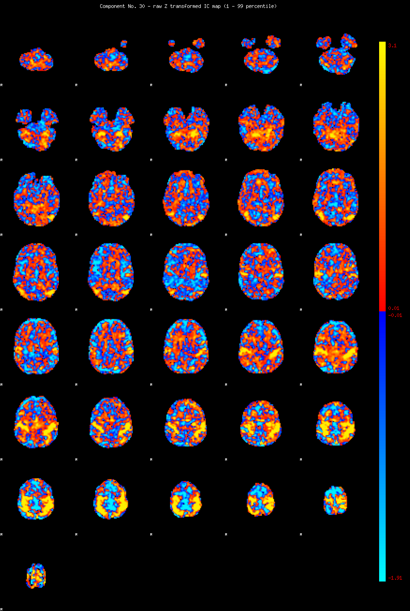
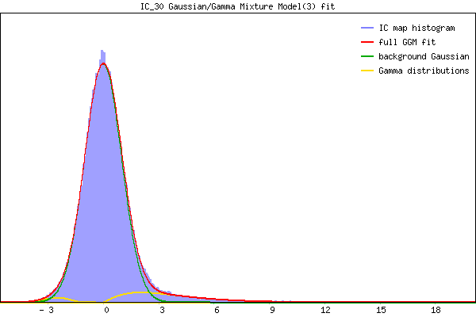

IC_30 Mixture Model fit
Means : 0.000000 3.645679 -2.657134
Vars : 1.000000 5.812019 0.516488
Prop. : 0.914479 0.073044 0.012477
This page produced automatically by MELODIC Version 3.15 - a part of FSL - FMRIB Software Library.